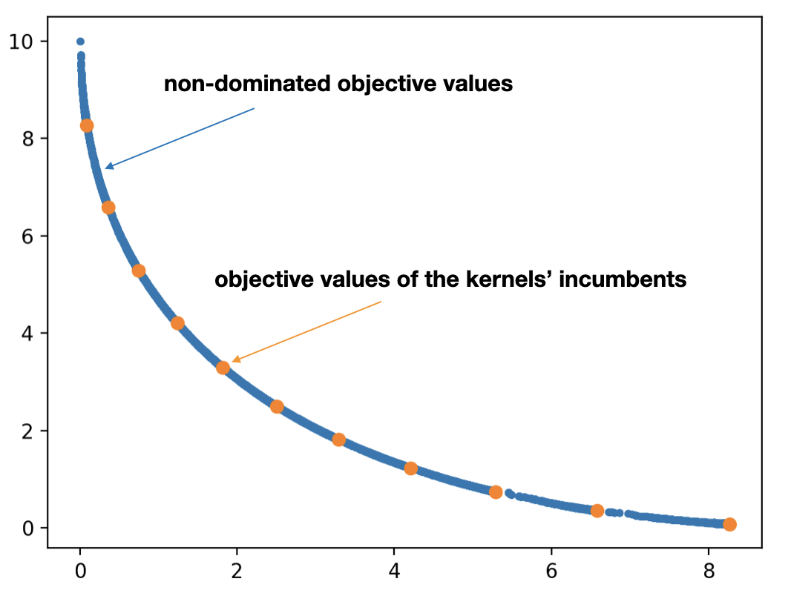

pycomocma
is a Python implementation of
COMO-CMA-ES
which is a Multiobjective Evolution Strategy, based upon the
Covariance Matrix Adaptation Evolution Strategy
( CMA-ES ) single optimizer.
For the time being, only the bi-objective case is tested and functional.
Either via
```
pip install git+ https://github.com/CMA-ES/pycomocma.git@master
```
or simply via
```
pip install comocma
```
comocma
module
The script
```
python -m comocma
```
runs the test written in the
__main__
file.
```python
import cma, comocma
```
```python
dimension = 10 # dimension of the search space
num_kernels = 5 # number of single-objective solvers (number of points on the front)
sigma0 = 0.2 # initial step-sizes
```
```python
list_of_solvers = comocma.get_cmas(num_kernels
[dimension
[0]], sigma0) # produce
num_kernels cma instances
moes = comocma.Sofomore(list_of_solvers, reference_point=[11, 11]) # create a bi-objective como-cma-es instance
moes3 = comocma.Sofomore(list_of_solvers, reference_point=[11, 11, 11]) # create a multiobjective como-cma-es instance
```
```python
fitness = comocma.FitFun(cma.ff.sphere, lambda x: cma.ff.sphere(x-1)) # a callable bi-objective function
fitness3 = comocma.FitFun(cma.ff.sphere, lambda x: cma.ff.sphere(x-1), lambda x: cma.ff.sphere(x+1)) # a callable multiobjective function
```
```python
list_of_solvers = comocma.get_cmas(num_kernels [dimension [0]], 0.2, inopts={'bounds': [0.2, 0.9], 'tolx': 10**-7,'popsize': 32})
num_kernels cma instances
moes = comocma.Sofomore(list_of_solvers, [1.1, 1.1]) # create a como-cma-es instance
```
```python
list_of_solvers = comocma.get_cmas(num_kernels [dimension [0]], 0.2)
moes = comocma.Sofomore(list_of_solvers, [1.1, 1.1], opts={'archive': True, 'restart': None, 'update_order': None}) # create a como-cma-es instance
```
Optimize
interface
```python
import cma, comocma
dimension = 10 # dimension of the search space
num_kernels = 5 # number of single-objective solvers (number of points on the front)
sigma0 = 0.2 # initial step-sizes
list_of_solvers = comocma.get_cmas(num_kernels
[dimension
[0]], sigma0) # produce
num_kernels cma instances
moes = comocma.Sofomore(list_of_solvers, [11,11]) # create a como-cma-es instance
fitness = comocma.FitFun(cma.ff.sphere, lambda x: cma.ff.sphere(x-1)) # a callable bi-objective function
```
fitness
until default stopping criteria
```python
moes.optimize(fitness)
```
Iterat #Fevals Hypervolume axis ratios sigmas min&max stds
(median) (median) (median)
1 10 1.210000000000000e+00 1.0e+00 2.00e-01 2e-01 2e-01
2 20 1.210000000000000e+00 1.0e+00 2.00e-01 2e-01 2e-01
3 30 1.210000000000000e+00 1.0e+00 1.85e-01 2e-01 2e-01
100 1000 1.207601015381810e+00 1.6e+00 3.40e-02 3e-02 3e-02
200 2000 1.209903687756354e+00 1.7e+00 7.74e-03 5e-03 6e-03
300 3000 1.209997694077156e+00 1.8e+00 2.03e-03 1e-03 1e-03
400 4000 1.209999800600613e+00 1.8e+00 4.90e-04 2e-04 3e-04
480 4800 1.209999979594839e+00 1.9e+00 2.02e-04 7e-05 9e-05
fitness
with a limited number of iterations
```python
moes.optimize(fitness, iterations=300)
```
Iterat #Fevals Hypervolume axis ratios sigmas min&max stds
(median) (median) (median)
1 10 1.100000000000000e+01 1.0e+00 2.00e-01 2e-01 2e-01
2 20 2.158412269365152e+01 1.0e+00 2.00e-01 2e-01 2e-01
3 30 2.896035267829712e+01 1.0e+00 1.98e-01 2e-01 2e-01
100 1000 9.512982413314423e+01 1.7e+00 1.01e-01 8e-02 9e-02
200 2000 9.703624875547615e+01 1.9e+00 4.27e-02 3e-02 4e-02
300 3000 9.722958234416403e+01 1.9e+00 1.63e-02 9e-03 1e-02
fitness
with a maximum number of evaluations
```python
moes.optimize(fitness, maxfun=3000)
```
Iterat #Fevals Hypervolume axis ratios sigmas min&max stds
(median) (median) (median)
1 10 1.100000000000000e+01 1.0e+00 2.00e-01 2e-01 2e-01
2 20 2.158412269365152e+01 1.0e+00 2.00e-01 2e-01 2e-01
3 30 2.896035267829712e+01 1.0e+00 1.98e-01 2e-01 2e-01
100 1000 9.512982413314423e+01 1.7e+00 1.01e-01 8e-02 9e-02
200 2000 9.703624875547615e+01 1.9e+00 4.27e-02 3e-02 4e-02
300 3000 9.722958234416403e+01 1.9e+00 1.63e-02 9e-03 1e-02
ask-and-tell
interface
```python
while not moes.stop():
solutions = moes.ask("all")
objective_values = [fitness(x) for x in solutions]
moes.tell(solutions, objective_values)
moes.disp() # display datas during the optimization
moes.logger.add() # logging data after each `ask` and `tell` call
```
Iterat #Fevals Hypervolume axis ratios sigmas min&max stds
(median) (median) (median)
1 180 1.990425600000000e-01 1.0e+00 1.88e-01 2e-01 2e-01
2 360 2.279075246432772e-01 1.1e+00 1.87e-01 2e-01 2e-01
3 540 2.436105134581627e-01 1.2e+00 1.90e-01 2e-01 2e-01
100 18000 3.607157703968831e-01 2.1e+00 1.80e-02 1e-02 2e-02
200 35172 3.635275131024869e-01 2.1e+00 5.95e-03 4e-03 5e-03
300 49788 3.637412031970786e-01 2.2e+00 1.29e-03 8e-04 1e-03
320 50784 3.637421277015990e-01 2.2e+00 1.26e-03 7e-04 9e-04
moes.ask
```python
solutions = moes.ask() # we generate offspring for only one kernel (sequential)
solutions = moes.ask(“all”) # we generate offspring simultaneously for all kernels (parallel)
solutions = moes.ask(number_asks) # we generate offspring for
number_asks
kernels
```
ask-and-tell
interface
```python
import cma, como, pickle
dimension = 10 # dimension of the search space
num_kernels = 5 # number of single-objective solvers (number of points on the front)
sigma0 = 0.2 # initial step-sizes
list_of_solvers = como.get_cmas(num_kernels
[dimension
[0]], sigma0) # produce
num_kernels cma instances
moes = como.Sofomore(list_of_solvers, reference_point = [11,11]) # create a como-cma-es instance
fitness = como.FitFun(cma.ff.sphere, lambda x: cma.ff.sphere(x-1)) # a callable bi-objective function
```
```python
for i in range(100):
solutions = moes.ask()
objective_values = [fitness(x) for x in solutions]
moes.tell(solutions, objective_values)
moes.disp()
pickle.dump(moes, open('saved-mocma-object.pkl', 'wb')) # we save the instance
print('saved')
del moes # deleting completely the Sofomore instance
```
Iterat #Fevals Hypervolume axis ratios sigmas min&max stds
(median) (median) (median)
1 10 1.100000000000000e+01 1.0e+00 2.00e-01 2e-01 2e-01
2 20 2.845200549045931e+01 1.0e+00 2.00e-01 2e-01 2e-01
3 30 3.440089785096067e+01 1.0e+00 2.00e-01 2e-01 2e-01
100 1000 9.562953505152342e+01 1.9e+00 1.13e-01 9e-02 1e-01
saved
```python
moes = pickle.load(open('saved-mocma-object.pkl', 'rb')) # we load the saved file here
moes.optimize(fitness, iterations=400)
```
200 2000 9.716644477685412e+01 1.9e+00 3.33e-02 2e-02 3e-02
300 3000 9.723550009906029e+01 2.0e+00 1.13e-02 6e-03 8e-03
400 4000 9.724067117112808e+01 1.9e+00 2.95e-03 1e-03 2e-03
500 5000 9.724107479961819e+01 2.0e+00 9.38e-04 4e-04 5e-04
```python
moes.logger.plot_front()
```

```python
moes.logger.plot_divers()
```
```python
cma.plot("cma_kernels/0")
```